Tree-based Models
- In part1 and part2 of our analyse on
bikesharedataset, we did explanatory analysis (EDA) and used Linear Regression for our prediction and Kaggle submission - We will try to improve our prediction score on the same dataset by more complex tree-based models
- Before diving directly into the project maybe it would be better to remind the tree based models
- So in this post we will review the trees and we will apply these models to our dataset in the next post
Trees vs Linear Models¶
-
With Linear Regression we need to create new features to represent the features interactions
-
Feature interactions occurs when the effects of features are combined
-
For example, the multiplication of two features can have more predictive power on the target than the individual features
-
With linear models, features must be linearly correlated (having non-zero correlation) to the target.
- Trees can learn the non-linear interactions between the features and the target
For example, what if the $target$ goes up when
- the $feature1$ is going up, and
- the $feature2$ is going down?
- One way to capture those interactions is either to multiply the features, or to use algorithms (like trees) that can handle non-linearity.
-
Linear regression is parametric i.e we don't need to keep the training data after we get the model parameters (w (weights), b (intercepts))
-
Parametric and nonparametric models differ in the way parameters of the model are fixed or data needed each time to determine the parameters
-
Trees are considered as non-parametric models.
-
Trees partitions the features space horizontally or vertically thus they create axis-parallel hyper rectangles whereas linear models can divide the space in any direction or orientation.
-
This is a direct consequence of the fact that trees select a single feature at a time whereas linear models use a weighted combination of all features.
-
In principle, a tree can cut up the instance space arbitrarily finely into very small regions.
-
A linear model places only a single decision surface through the entire space. It has freedom in the orientation of the surface, but it is limited to a single division into two segments.
-
This is a direct consequence of there being a single (linear) equation that uses all of the variables, and must fit the entire data space
An hyperplane by a linear model¶
An hyperplane created by a linear model divides the feature space into two 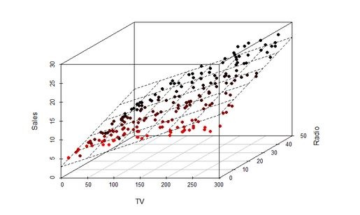
Trees cut the space horizontally and vertically¶
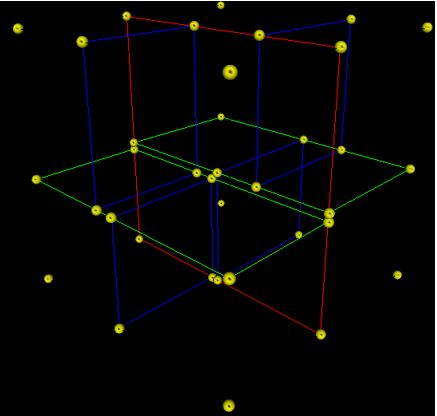
- A 3-dimensional (with 3 features) tree.
- The first split (by the red vertical plane) cuts the space into 2 regions then,
- each of the two regions are split again (by the green horizontal planes) into 2 regions.
- Finally, those 4 regions are split (by the 4 blue vertical planes) into 2 regions.
- Since there is no more splitting, finally the whole space is split into 8 regions
Advantages of Decision Trees:¶
- Simple to interpret.
- Trees can be visualised.
- Requires little data preparation.
- Other techniques often require
- data normalization,
- dummy variables need to be created
-
The cost of using the tree (i.e., predicting data) is logarithmic in the number of data points used to train the tree.
-
Able to handle both numerical and categorical data (Sklearn only support numerical data at the moment)
- They can find non-linear relationships between features and target variables, as well as interactions between features.
-
Quadratic, exponential, cyclical, and other relationships can all be revealed, as long as we have enough data to support all of the necessary cuts.
-
Decision trees can also find non-smooth behaviors, sudden jumps, and peaks, that other models like linear regression or artificial neural networks can hide.
-
Decision tree can easily identify the most important(predictive) feautes and relation between two or more features.
- With the help of decision trees, we can create new features that has better power to predict target variable.
Disadvantages of Decision Trees :¶
- Decision-tree learners can create over-complex trees that do not generalise the data well. This is called overfitting.
- Setting constraints such as
- the minimum number of samples required at a leaf node or
- the maximum depth of the tree and
- pruning (not currently supported by Sklearn) are necessary to avoid this problem
-
Decision trees can be unstable because small variations in the data might result in a completely different tree being generated. This problem is mitigated by using decision trees within an ensemble.
-
Decision tree learners create biased trees if some classes dominate. It is therefore recommended to balance the dataset prior to fitting with the decision tree.
-
Practical decision-tree learning algorithms are based on heuristic algorithms such as the greedy algorithm where locally optimal decisions are made at each node. Such algorithms cannot guarantee to return the globally optimal decision tree.
-
This can be mitigated by training multiple trees in an ensemble learner, where the features and samples are randomly sampled with replacement.
-
In principle, you can approximate anything with decision trees but in practice you can't approximate very well. Still decision trees are very efficient because in practice the feature spaces are high dimensional that is data is very sparse
How a Regression Tree Splits the Feature Space?¶
-
Trees start testing features from the ones that potentially most quickly lead to a conclusion i.e most predictive or important
-
In each node trees test a feature
- Order of features matters
-
In a step, for each feature the loss function (accuracy in case of classification) on the target variables calculated and the feature who provides the least loss is selected as the split feature
-
If the features are continuous, like temperature in our example, internal nodes may test the value against a treshold
-
Everytime tree ask
Feature1>=somethingorFeature2>=somethingresults in two splits of the feature space horizontally or vertically -
Decision trees are nested if-then staments
-
They predict the value of a target variable by learning simple decision rules inferred from the features.
-
For instance, in our dataset, decision trees learn from data with a set of if-then-else decision rules like if the
"hour"is later than5hand earlier than6helse iftemperatureis higher than15Cthen.. -
The deeper the tree, the more complex the decision rules and the fitter the model.
Steps of Splitting Process¶
Lets denote our features (like temperature, humidity etc) as $X_1, X_2,...,X_p$
For the split process there are 2 steps:
-
We divide the feature space (the set of possible values for features) into J distinct and non-overlapping regions: $R_1, R_2,...,R_J$
-
When we make any prediction for a sample, we check in which region(subset) our sample falls.
- Say it is the region $R_j$.
- Then the mean of the target values of the training samples in $R_j$ will be the predicted value of the given sample.
For instance, suppose that
- in Step 1 we obtain 2 regions, $R_1$ and $R_2$, and
- target mean of the training samples in the first region is $10$, while
- target mean of the training samples in the second region is $20$.
-
Then, if a new sample falls in $R_1$, we will predict a value of $10$ for the target value of that sample, and if it falls in $R_2$ we will predict a value of $20$.
-
For regression trees the future importance is measured by how much each feature reduce the variance when they split the data
How do we construct the regions $R1,...,RJ $ ?¶
We divide the space into high-dimensional rectangles, or boxes. The goal is to find boxes $R_1,...,R_J$ that minimize the
- Mean Squared Error, which minimizes the L2 error using mean values of the regions, or
- Mean Absolute Error, which minimizes the L1 error using median values of the regions
Mean Squared Error:
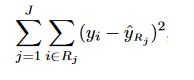
where $ŶR_j$ is the target mean for the training observations within the $j th$ box and the $Y_i$ is the actual target value of the test observation
Note:
- As seen above, regression tree split depends on the mean of the targets, since the mean is severly affected by outliers, the regression tree will suffer from outliers.
- There are two main approaches to solve this problem:
- either removing the outliers or
- building the decision tree algorithm that makes splits based on the median instead of the mean, as the median is not affected by outliers.
Recursive Binary Splitting¶
For computational feasiblity, we take a top-down, greedy approach that is known as recursive binary splitting.
The recursive binary splitting approach is top-down because
- it begins at the top of the tree (at which point all observations belong to a single region) and then
- successively splits the features space; each split is indicated via 2 new branches further down on the tree.
It is greedy because
- at each step of the tree-building process, the best split is made at that particular step, rather than
- looking ahead and picking a split that will lead to a better tree in some future step
In order to perform recursive binary splitting,
- we first select the feature $X_j$ (jth feature) and the cutpoint $s$ such that splitting the feature space into two regions where $X_j< s$ and $X_j≥s$ leads to the greatest possible reduction in Mean Squared Error.
That is,
- we consider all features $X_1,...,X_p$, and all possible values of the cutpoint $s$ for each of the features, and then
- choose the feature and cutpoint such that the resulting tree has the lowest mean squared error.
In greater detail,
- for any $j$ (indice of the features) and $s$ (cutting point), we define
- a half-plane $R_1(j, s)$ where $X_j<s$ and
-
a half-plane $R_2(j, s)$ where $X_j≥s$ then
-
we seeek the value of $j$ and $s$ that minimize the equation
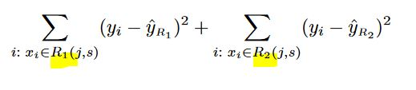
where
- $ŶR_1$ is the target mean for the training samples in $R_1(j, s)$ and
- $ŶR_2$ is the target mean for the training observations in $R_2(j, s)$.
Finding the values of $j$ and $s$ can be done quite quickly, especially when the number of features is not too large.
Next, we repeat the process,
-
looking for the best feature and best cutpoint in order to split the data further so as to minimize the mean squared error within each of the resulting regions.
-
However, this time, instead of splitting the entire features space, we split one of the two previously identified regions.
-
We now have 3 regions.
Again,
-
we look to split one of these 3 regions further, so as to minimize the mean squared error.
-
The process continues until a user defined stopping criterion is reached
- For instance, we may tell the algorithm to stop once the number of samples per node becomes less than 5 observations.
Once the regions $R_1,...,R_J$ have been created, we predict the target for a given test observation using the mean of the training samples in the region to which that test observation belongs.
A 5-region example of this approach is shown in below. The output of recursive binary splitting on a 2-features ($X_1, X_2$) example.
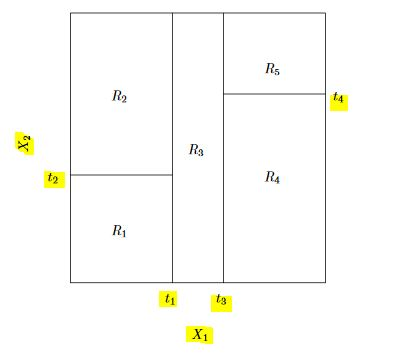
A tree corresponding to the partition in the above figure.
- First we split the feature space into 2 regions by $X_1>t_1$ and $X_1<=t_1$ and continue to partitioning the new regions
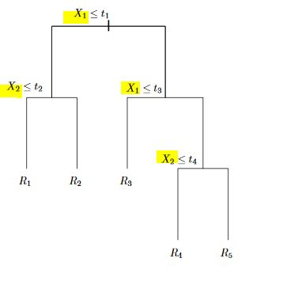
A perspective plot of the prediction surface corresponding to the tree above.
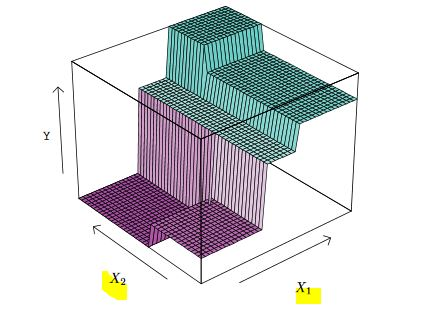
Ensemble Methods¶
- Can single learners be combined in order to make a stronger learner?
- The idea behind the ensemble learners is to use the wisdom of crowd by assembling together several algorithms or models in order to improve generalizability / robustness over a single estimator
- Ensemble models are meta-models that aggregates the predictions of individual models based on specific formulas.
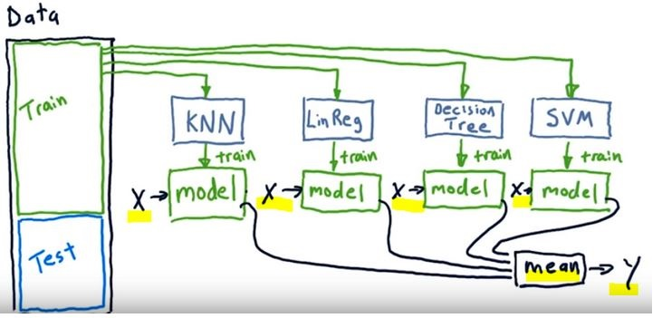
- In the above image we see a tamplate of an ensemble model
- We train single learners like KNN, Decision Tree, SVM etc with the same data (X)
- Then we combine all the outcomes (y) of the single learners. In case of regression we take the mean of the all the predictions
- For evaluation we can use the mean of the predictions for testing with the our test data
Why ensembles might be better?¶
- Ensemble methods does not overfit (less variance) as any of single learners
- Ensemle learners have less bias than each of the single learners
- If we combine several models of different types, we can avoid being biased by one approach.
- This typically results in less overfitting, and thus better predictions in the long run, especially on unseen data.
We can classify ensembe methods as averaging and boosting methods
- In averaging methods, we build several estimators independently and then to average their predictions.
- On average, the combined estimator is usually better than any of the single base estimator because its variance is reduced.
-
Examples: Bagging methods, Forests of randomized trees etc
-
In boosting methods, we build base estimators sequentially and one tries to reduce the bias of the preceding estimator (boosting the preceding)
- Examples: AdaBoost, Gradient Tree Boosting etc
Bootstrap Aggregating- Bagging¶
A way of building ensemble learners is
- using the same algorithm (one kind) but
- training each learner on a different set of data
- Like in the picture below we create bags of data by randomly subsetting with replacement (from the original traning dataset, bootstrap method)
- Number of instances in the original training dataset should be equal to the number of instances in the random data bags (n’ = n).
- Because the training data is sampled with replacement, about 60% of the instances in each bag are unique.
For example a Random Forest algorithm can train 100 Decision Trees on different random subsets of the original training data.
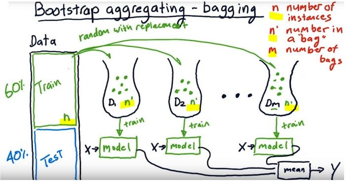
- As depicted here the single models work independently i.e models run in parallel
-
As understood from the name we bootstrap the data and aggregate all the predictions of single learners
-
As they provide a way to reduce overfitting, bagging methods work best with strong and complex models (
e.g., fully developed decision trees)
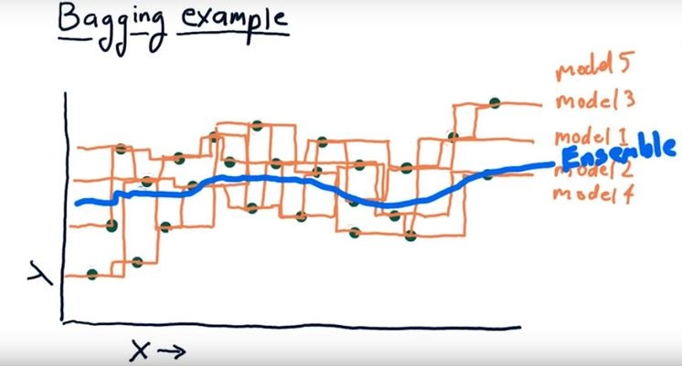
- When a new instance is fed to the ensemble, each single model makes it's prediction and the meta model collects the predictions and make the final decision either by taking the mean (regression) or voting (classification)
- In the image even though single models provide different outcomes taking the average of all the single models by an ensemble model smoothes the outcome
Forest of Randomized Trees (Random Forest)¶
- It is a special case of ensemble learning
- The base learners are Decision Trees
- Training and prediction tasks are parallelized, because the individual trees are entirely independent of each other.
- Each estimator is trained on a different bootstrap sample having the same size as the training set
- Random Forest introduces further randomization in the training of individual trees at the feature selection level
Randomization in Random Forests¶
- At the data selection level: The single estimators (trees) select the data randomly by bootstrap aggregation
- At the feature selection level: Each tree, instead of searching greedily for the best feature to create branches, it randomly samples the features without replacement
Training Process of Random Forests¶
- Randomly select “d” features from total “m” features where d << m
- Among the “d” features, choose the best split point like in the decision trees (by information gain)
- Split the node into child nodes using the best split
- Repeat 1 to 3 steps without using the features used before
- Build forest by repeating the steps from the beginning
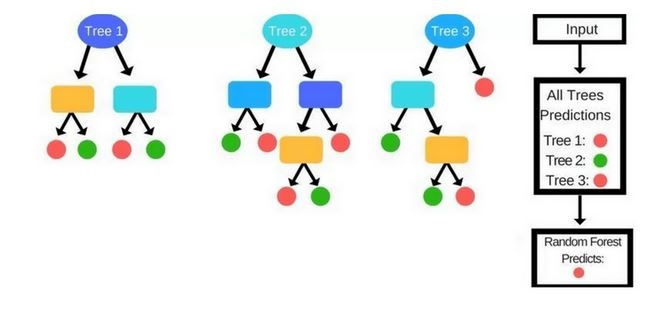
Prediction Process¶
- In a Decision Tree a new instance (test sample) goes from the root node to the bottom until it falls in a leaf node.
-
In the Random Forests algorithm, each new data point goes through the same process, but now it visits all the different trees in the ensemble, which were grown using random samples of both training data and features.
-
For Classification problems, it uses the mode or most frequent class predicted by the individual trees (also known as a majority vote), whereas for Regression tasks, it uses the average prediction of each tree.
Boosting¶
Boosting
- is slightly different than bagging
- works squentially i.e each single learner in the ensemble model is dependent
- can track the model who failed the accurate prediction and focus on the areas that system does not perform well
- works iteratively (we massage the data and construct better and better model)
In boosting each predictor tries to correct its predecessor.
Training Process of Boosting¶
- Initially all the data points were weighted equally ie they have equal chances to be selected as as input data
-
In each boosting round
- we find the worst performing single learner with the weighted training errors
- we then raise the weigths of the training data points which are mispredicted by the current learner.
- each predictor is assigned a coefficient α that weighs its contribution to the final prediction of the ensemble
- α depends on the predictor's training error
-
We compute the final prediction as a linear combination of all the learners with the weights of the learners(α) which depends on the prediction performance of them
-
The way of re-weighting and combining the learners depends on the boosting type like Adaboost, Xgboost etc
- Boosting methods usually work best with weak models (e.g.,
shallow decision trees).
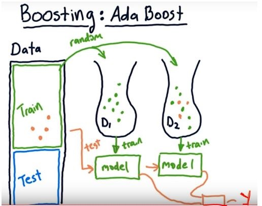
In the image we see Adaboost (stands for Adaptive Boosting) template.
- The orange data points are the ones that could not well predicted by the first learner
- When the we choose data for the next learner (next bag of data), we select randomly but different from the bagging method all the data points will be weighted according to the wrong predicted points. Thus, the wrong predicted samples will have more chance to be selected as an input for the next predictor
- After choosing the second dataset(input for the second predictor) we test the overall performance of the bags and continue to choose data bag for the third learner regarding the poor predicted points
Here is an image summarazing the way sampling for sinle learner, bagging and boosting
- In single learner the model use the training set directly
- In bagging, each learner randomly chooses samples by replacement
- In boosting, each learner chooses samples from a weighted samples set
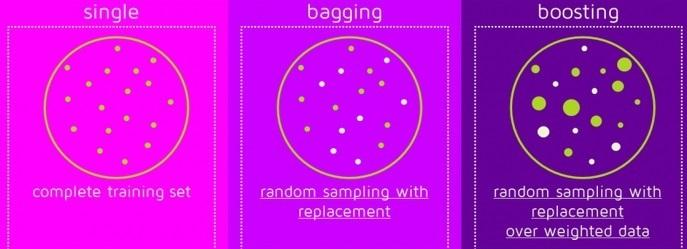
- Boosting and bagging are not new algorithms
- They are meta algorithms that wrap the single learners

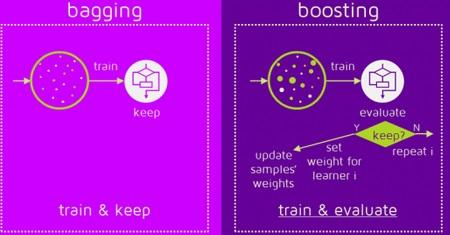
Sources:
https://www-bcf.usc.edu/~gareth/ISL/ISLR%20Seventh%20Printing.pdf#page=31
https://scikit-learn.org/stable/modules/tree.html#classification
https://classroom.udacity.com/courses/ud501/lessons/4802710867/concepts/47973133930923
https://quantdare.com/what-is-the-difference-between-bagging-and-boosting/
Comments